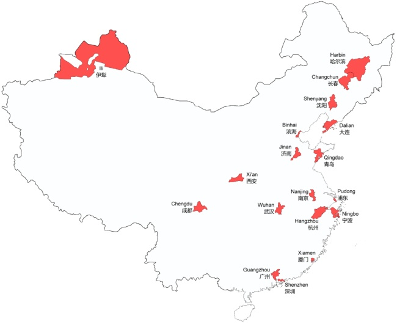

 副省级市 图片来自维基百科：副省级市
谢（知乎人工智障算法于首页今日头条位置醒目应景）推荐。
因为刚才回复了自己某回答（链接）下面的评论：
｛衣上酒痕｝
姨学？
｛范狂夫｝（作者）回复｛衣上酒痕｝
你可以直接问辽国上京旧址内蒙赤峰出生的钦定文豪｛@马伯庸｝为什么自称「西肃慎代天启运后清诸上神圣千年上等开明大帝国太祖威武文圣德仁昭明高贤景匡弘皇帝」还叫嚣「讨厌的人都要死」，与当年那割据新疆的「西契丹后辽国」乃至｛耶律大石｝或当代各种「石某」「石某某」之间都有什么关系。
然后想起前年初在日记里面探讨过文艺理论，也是以「第三次世界大战」为采风，为了设定集而构思的一部分。之前已经在知乎回答过相关问题，但是「被删除且无提醒」，简书备份在这里：
这个回答当中并没涉及兲朝境内话题，但是作为「不入流写手」为了构思肯定要考虑到兲朝情况吖。所以，日记里面其实早已经写过了，就是没贴出来罢了。
于是以「伊犁」为关键字搜索了一下自己的日记，（其中包括了钦定黑客远程入侵并修改文件插入用于栽赃陷害的许多语无伦次内容，懒得改了），有这么若干篇涉及：
看来内容不少，懒得都摘出来，长话短说吧。
首先，新疆地缘结构是这样的：
很明显被两条山脉以「×」型分成「东西南北」四大块，其中「西疆」就是伊犁所在的位置，而「伊犁哈萨克自治州」是以人口结构划分的，类比兲朝先秦传统，是春秋时期那种「血缘政治集团」而不是战国时期的「地缘政治集团」。
从另一个角度看，广义的「伊犁」其实是「伊犁河流域」，也就是知乎一票广告号吹嘘的啥「塞上江南」「内亚天堂」之类，地理上的定义是这样的：
从这个角度看，天朝境内的「伊犁河谷」其实是个如同西藏墨脱一样的「突出部」，翻山越岭才能把持，而若是以「山川形便」为原则「自然而然」的归属，其实不应该算在兲朝境内。
至于为什么，肯定会出现一票有良心的青年历史学家、历史发明家、历史作家跳出来，唾沫星子飞溅的向围观群众解释，本来「外西北」都是「我大清」的，奈何「罗刹野心狼」这个那个，若非「左公」如何如何，连这个伊犁河谷也保不住……云云。
这一套也是兲朝义务制教育当中洗脑用的官方立场，那么即便不考虑「罗刹野心狼」的态度，问过当地土著哈萨克族的意见了么？
前一阵关于哈萨克斯坦和哈萨克族的回复也有，本地编号№136、№137、№138，还都是知乎站方或热心网友邀请我回答的。这里不再重复相关内容，除了强调境内哈萨克族属于「大玉兹」以阿拉木图为事实首府之外。
也就是说，按照「激化矛盾制造冲突增加剧情跌宕起伏程度」的高标准严要求，在架空设定当中，这个「伊犁河流域」就是「自由、独立、境内严格中立的伊犁共和国」，相关现实素材都可以挪用到设定集当中去作为「艺术来源于生活又高于生活」的成果。
顺便，公开消息（既非国家机密也非宇宙奥秘）称，伊宁市有个社区「六星街」，建于1934-1936年，由德国工程师瓦斯里规划设计。图片可以参考这个（刚在繁荣的中文互联网上临时搜到的）「昆仑网·新疆党建网」链接：
既然「这种类似六角形的街巷，目前只有英国、德国等少数几个欧洲国家尚有留存」……那么各位想起什么来了？肯定不是清真标识。具体是什么，留做习题答案略，读者自证不难。
总之，即便通古斯「贵种」（C3）、叶尼塞「贵种」（Q1）团结维吾尔「贱种」，这「西肃慎后清国」或「西契丹后辽国」天命昭昭在新疆建立……也不能阻挠其它「贵种」团结哈萨克人民坚持「自由、独立」，不过迫于严峻国际局势「境内严格中立」恐怕做不到了。
发表于［2018-06-03］
范狂夫
囧斋